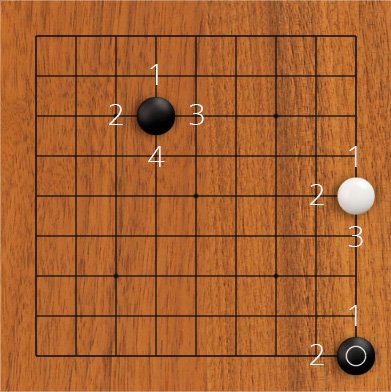

The empty spaces next to a stone are called liberties.

As you can see, a stone anywhere above 1st line initially has 4 liberties. Stone on the edge has 3 and stone in the corner has only 2 liberties! That means that to capture a lone stone in the corner all you need are two moves, while in the center you would need four.
If a stone, or a group of stones, has only one liberty left (capture is iminent), we say that it is in Atari.
If you fill a last liberty of opponent's stone, that stone is taken away from the board and added to your captures, where it earns you a point. The same applies to groups of several stones (and you get a point for each stone).
Let's practice, shall we? (All the puzzles here are black to play!)
Your browser sucks. Download something up to date.
Awesome, you are almost there. Really. Go has simple rules.
Actually, let me get back to this one later
EZ, I got this, what's next?